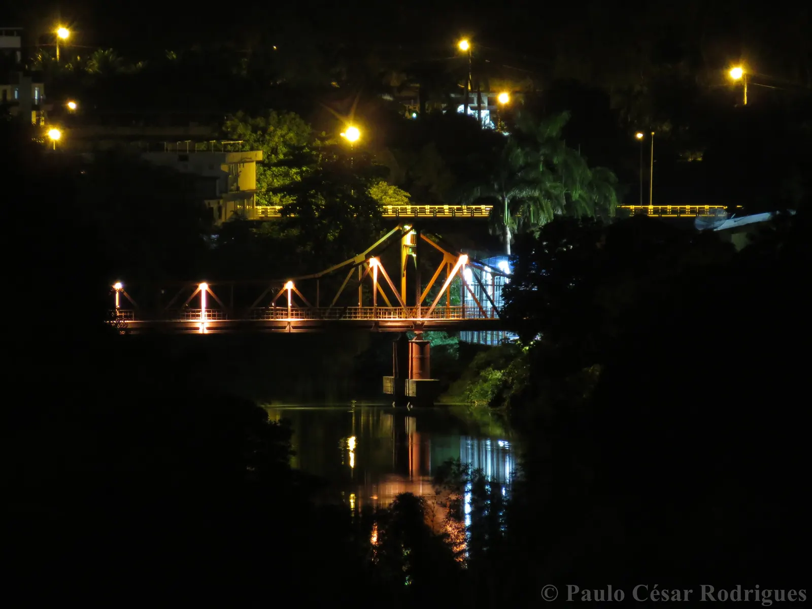
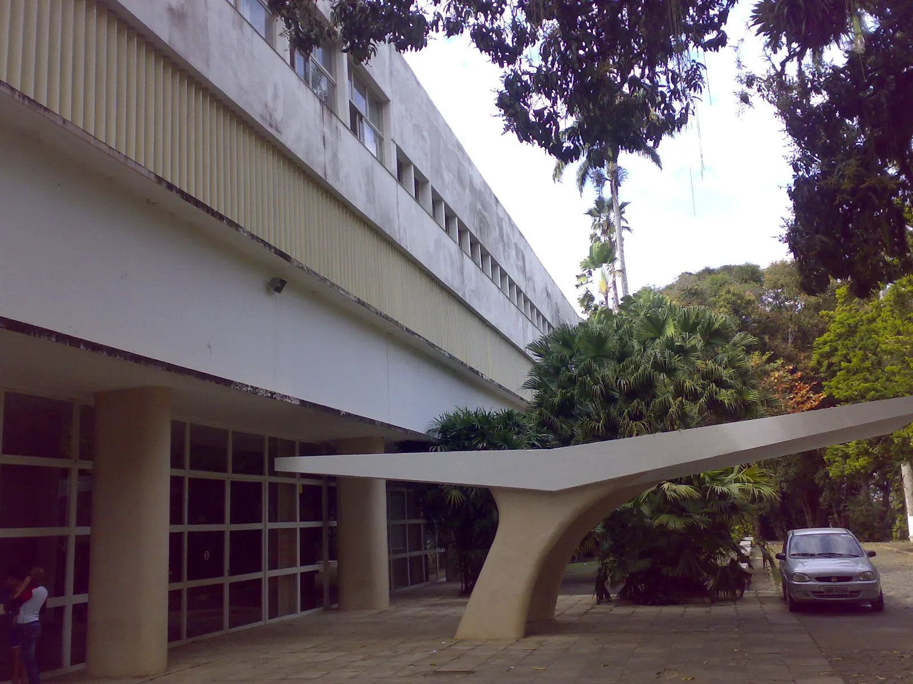
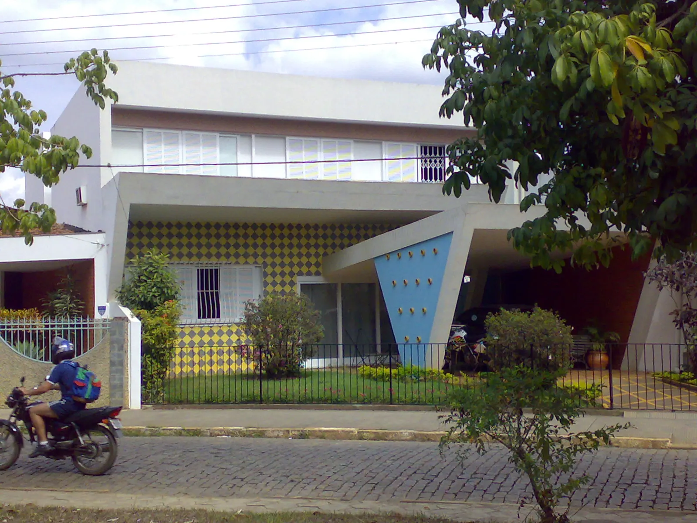
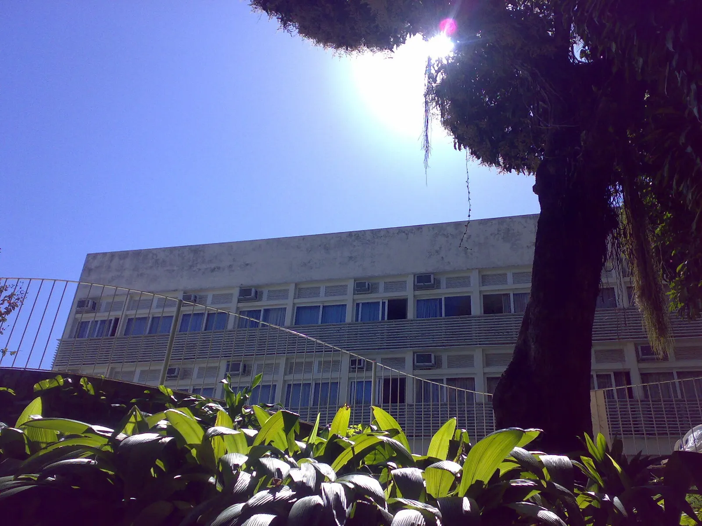
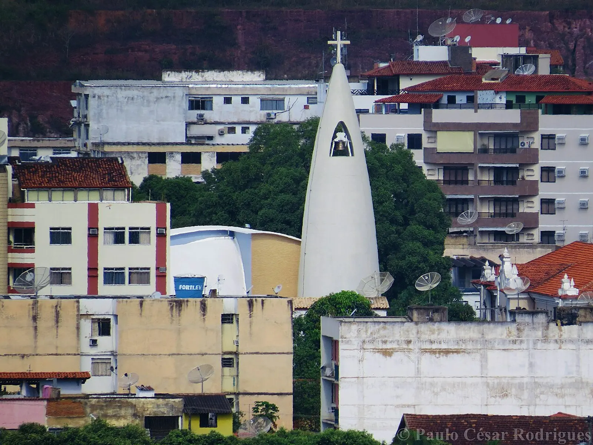

Cultura e modernismo
Cataguases
O ponto onde eletrificação, cinema, literatura e arquitetura moderna transformaram uma cidade do interior em referência nacional.
- Memorial Humberto Mauro
- Acervo modernista
- Polo Audiovisual
Zona da Mata · Minas Gerais
Da energia que atravessou municípios à vanguarda que atravessou o Brasil: conheça as muitas camadas de Cataguases.
Começar a jornadaA síntese
O pioneirismo de Cataguases não está em ter sido a primeira cidade brasileira iluminada. Está em ter criado, no interior, um sistema regional, empresarial e duradouro de eletrificação.
Em 1908, a Usina Maurício tornou-se a primeira hidrelétrica brasileira apontada por fornecer energia a mais de uma cidade. A luz impulsionou fábricas, redesenhou o cotidiano e ajudou a criar as condições para uma das experiências modernistas mais singulares do país.
Eletrificação
Às 20 horas de 3 de julho de 1908, 164 pontos de luz transformaram a percepção da cidade.
160 lâmpadas incandescentes de 32 velas
04 lâmpadas de arco voltaico de 600 velas
A cidade aguarda a chegada da luz.
Percorra os marcos
A Companhia Força e Luz Cataguazes-Leopoldina é constituída por José Monteiro Ribeiro Junqueira, João Duarte Ferreira e Norberto Custódio Ferreira.
Julho de 1908
A rede inaugurou um modelo regional de distribuição e alcançou quatro cidades no mesmo mês.
Industrialização
A eletricidade encontrou uma cidade em transição. A economia ligada ao café ganhava uma base industrial, sobretudo têxtil.

A fábrica, inicialmente movida a vapor, antecedeu em dois anos a operação da companhia elétrica e marcou o início da industrialização local.
Uma notícia do jornal Cataguases, citada em pesquisa acadêmica, já registrava doze municípios atendidos pela companhia.
Ruas, casas, comércio e fábricas estenderam seus horários. Pessoas, capital e ideias passaram a circular com mais intensidade.
“A energia criou condições materiais; a industrialização, condições sociais; e o mecenato, condições institucionais.”
O êxodo rural e as vilas operárias fizeram parte da expansão urbana. Nas décadas de 1930 e 1940, políticas higienistas e demolições também revelaram uma modernização seletiva, com controle do espaço e exclusão de grupos populares.
Contar Cataguases por inteiro exige colocar o trabalho, os bairros e as experiências cotidianas ao lado das obras consagradas.
Cultura modernista
A Revista Verde conectou jovens cataguasenses aos principais nomes do modernismo. Em suas páginas, a cidade deixou de ser margem e passou a produzir vanguarda.
“Todo o Brasil está surpreso: existe Cataguazes!”Ribeiro Couto, 1928
O Ciclo de Cinema de Cataguases projetou Humberto Mauro como pioneiro da linguagem cinematográfica brasileira. A cidade aprendeu a se olhar em movimento antes de se desenhar em concreto.
Literatura, cinema e arquitetura não são episódios isolados: formam uma continuidade cultural.
Arquitetura, jardins, murais, mobiliário e escultura passaram a compartilhar a mesma linguagem. Niemeyer, Burle Marx, Portinari, Tenreiro e artistas locais encontraram em Cataguases um raro laboratório.
Em 1952, a revista francesa L’Architecture d’Aujourd’hui chamou o conjunto de “phénomène Cataguazes”.
Arquitetura e arte
Não são apenas edifícios notáveis. É um ecossistema que reúne espaço, jardim, mural, escultura, mobiliário e vida urbana.




Tombamento federal
Um perímetro urbano e 16 bens de destaque, com seus elementos móveis e integrados, passam a ser protegidos como uma totalidade cultural.
Cataguases hoje
A rota municipal conecta turismo, educação e patrimônio com visitas mediadas e sinalização de pontos históricos, culturais e naturais.
O Festival Modernista reuniu cerca de 70 mil pessoas em três dias, mostrando a capacidade da memória local de mobilizar o presente.
O Colégio Cataguases foi selecionado no PAC, enquanto o Cine Edgard entrou em processo público de restauração e requalificação.
Alcance cultural
Ordens de grandeza, não uma série comparável: equipamentos anuais de 2017 e um festival de três dias em 2025.
O próximo capítulo
Gestão burocrática do tombamento, financiamento contínuo, acessibilidade turística e inclusão da memória operária seguem como desafios.
A nova infraestrutura urbana, incluindo LED em 7.871 pontos, precisa dialogar com a paisagem histórica que tornou a cidade singular.
Fontes e método
Esta experiência foi construída a partir do estudo disponível nesta pasta, que cruza memória setorial, documentos públicos, produção acadêmica e fontes locais.
O ato municipal original da concessão elétrica não foi localizado integralmente em fonte primária aberta. Há variações para a conclusão do Colégio Cataguases, tratada aqui como 1945–1949. Em alguns bens, as fontes não distinguem de forma inequívoca tombamento isolado e proteção pelo conjunto urbano.
Imagens obtidas no Wikimedia Commons. Vista de Cataguases: Paulo César Rodrigues, CC BY-SA 3.0. Ponte metálica, Colégio Cataguases, Hotel Cataguases, residência na Avenida Humberto Mauro e Santa Rita: seus respectivos autores, licenças CC BY-SA 2.0 ou 4.0. Consulte os metadados completos nos links do projeto-fonte.